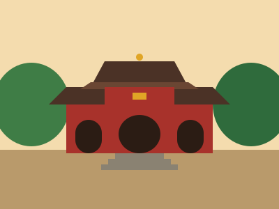
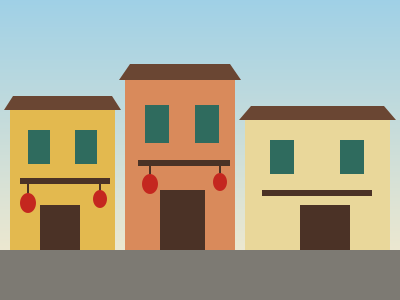

Chuyển đến nội dung chính
Hà Nội ngàn năm
Trang chủ
Điểm đến
Thư viện ảnh
Thư viện ảnh
Sáu hình ảnh về cảnh sắc và món ăn Hà Nội.
Hà Nội qua hình ảnh
Tháp Rùa

Văn Miếu
Chùa Một Cột
Phở bò
Cà phê trứng

Phố cổ